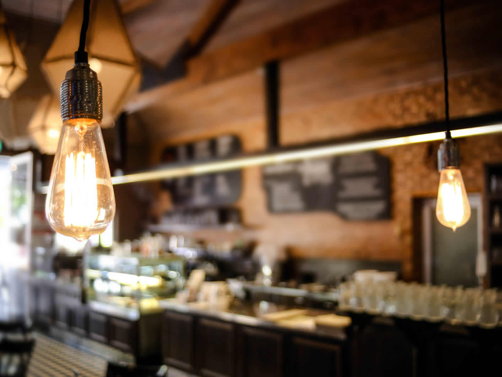

Intro
Menu
About
Contact
Antique Cafe
your daily energy booster
This is a coffee shop template named Antique Cafe which is a parallax HTML5 template with a good responsiveness. Feel free to use this layout for your cafe. If you have any question, please send us a message.
Let's explore...